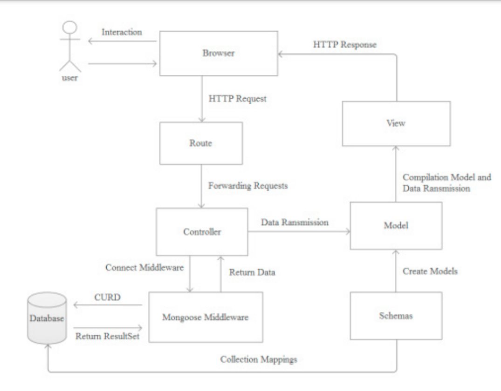

Resumen
Con el fin de explorar la herencia y promoción de la cultura cinematográfica, este trabajo diseña un sistema web con arquitectura B/S. Con la separación de la capa de modelo, la capa de visualización y la capa de controlador, el sistema tiene tres módulos, que incluyen el área de temas, el área de grabación y el área de recomendaciones. El desarrollo web e implementar la comunicación y construcción de la cultura de la comunidad cinematográfica, que es de gran importancia para la comprensión de la tendencia de desarrollo de la red social. Los datos de los usuarios del sistema son útiles para la exploración de sus comportamientos en la red y características de personalidad, lo que puede expandir su mundo espiritual y reducir la presión de la vida.
Palabras Clave
Cine Cultura, Arquitectura B/S, Redes Sociales, Desarrollo Web.
Publicacion
Lugar de publicacion: Guangdong Ocean University, Zhanjiang City, Guangdong Province, China disponible online 18 Marzo 2020.
Referencias
Cantidad de Referencias: 19
1.. Grasso A , Snowdon D , Koch M . Extending the Services and the Accessibility of Community Networks[C]// Digital Cities, Technologies, Experiences, & Future Perspectives. Springer-Verlag, 2000.
2. Chang R S . Social Networks: Research and Applications[M]// Future Generation Information Technology. Springer Berlin Heidelberg, 2010.
3. Huang L , Ma Y , Liu Y . Social Influence Analysis Based on Modeling Interactions in Dynamic Social Networks: A Case Study[M]// Cloud Computing and Security. Springer International Publishing, 2016.
4. Lapenok M V , Tsygankova A V , Tagiltseva N G , et al. User Identification in a Variety of Social Networks by the Analysis of User's Social Connections and Profile Attributes[C]// International Conference on Smart Education
& Smart E-learning. Springer, Cham, 2017.
5. Nguyen H T , Snasel V . [Lecture Notes in Computer Science] Computational Social Networks Volume 9795 || Exploiting Social Relations to Recommend Scientific Publications[J]. 2016, 10.1007/978-3-319-42345-6(Chapter 16):182-192.
6. Guo R , Wang H , Zhong L , et al. Harbinger: An Analyzing and Predicting System for Online Social Network Users' Behavior[J]. Computer Science, 2013, 8422:531-534.
7. Ha I , Oh K J , Hong M D , et al. Social Filtering Using Social Relationship for Movie Recommendation[C]// International Conference on Computational Collective Intelligence: Technologies & Applications. Springer-Verlag,
2012.
8. Vilakone P , Park D S , Xinchang K , et al. An Efficient movie recommendation algorithm based on improved k-clique[J]. Human-centric Computing and Information Sciences, 2018, 8(1):38.
9. Yang C , Chen X , Liu L , et al. A Hybrid Movie Recommendation Method Based on Social Similarity and Item Attributes[C]// International Conference on Sensing & Imaging. Springer, Cham, 2018.
10. Das D , Chidananda H T , Sahoo L . Personalized Movie Recommendation System Using Twitter Data[M]// Progress in Computing, Analytics and Networking. 2018.
11. Adabi A , Alfaro L D . Toward a Social Graph Recommendation Algorithm: Do We Trust Our Friends in Movie Recommendations?[M]// On the Move to Meaningful Internet Systems: OTM 2012 Workshops. 2012.
12. Kim M , Park S O . Group affinity based social trust model for an intelligent movie recommender system[J]. Multimedia Tools and Applications, 2013, 64(2):505-516.
13. Ha I , Oh K J , Hong M D , et al. Social Filtering Using Social Relationship for Movie Recommendation[C]// International Conference on Computational Collective Intelligence: Technologies & Applications. Springer-Verlag,
2012.
14. Boonlong S , Wongsurawat W . Social media marketing evaluation using social network comments as an indicator for identifying consumer purchasing decision effectiveness[J]. Journal of Direct Data & Digital Marketing
Practice, 2015, 17(2):130-149.
15. Tianyi, WANG, Yang, et al. The power of comments： fostering social interactions in microblog networks[J]. Frontiers of Computer Science, 2016(5):889-907.
16. Liang Z , Jia Y , Zhou B . Adaptive Topic Community Tracking in Social Network[M]// Web Technologies and Applications. Springer Berlin Heidelberg, 2012.
17. Bi J , Huang J , Qin Z . A Relationship Strength-Aware Topic Model for Communities Discovery in Online Social Networks[J]. Lecture Notes in Electrical Engineering, 2014, 279:709-715. 18. František Babič, Anna Drábiková.
Prediction of Topics Popularity on On-Line Social Networks[M]// Multimedia and Network Information Systems. Springer International Publishing, 2017.
19. Zhou N , Zhan X X , Ma Q , et al. Identifying Spreading Sources and Influential Nodes of Hot Events on Social Networks[J]. 2017.
Articulo obtenido de: Research and Development of Movie Social System